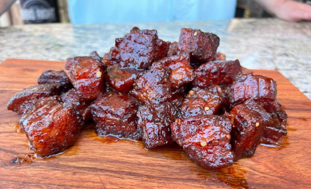

Pork Belly Burnt Ends

Pork Belly Burnt Ends
Smoke pork belly burnt ends might be one of my favorite BBQ treats. Done right, they are like little pieces of meat candy. They make for great appetizers or game day snacks, as they are rich and filling. Serve them on a toothpick or on a bun for a delicious sandwich!
Ingredients
- 8lb Pork Belly skin removed
- ½ cup Killer Hogs The BBQ Rub
- 1 ½ sticks Butter sliced
- ½ cup Brown Sugar
- ¼ cup Honey
Pork Belly Burnt End Glaze
- 1 cup Killer Hogs The BBQ Sauce
- ¼ cup Apple Juice
- ¼ cup Apple Jelly
- 1 Tablespoon Frank’s Hot Sauce
Cooking Steps
- Prepare charcoal smoker for indirect cooking at 250-275⁰. Add 2 chunks of Cherry Wood for smoke.
- Remove pork belly from packaging and cube into 1 ½” x 1 ½” pieces.
- Season all sides of the pork belly cubes with The BBQ Rub.
- Arrange cubes onto a full size cooling rack and place on smoking grate.
- Smoke pork belly for 2 to 2 ½ hours.
- Place each Pork Belly Burnt End into an aluminum pan and cover with brown sugar and honey. Arrange butter in between the pork belly pieces.
- Cover pan with aluminum foil and return to smoker for 1 ½ hours or until the pieces are tender.
- Drain the liquid from the pan and add the Pork Belly Glaze to the burnt ends. Toss gently to coat each piece and return to the smoker to set the glaze for 5-10 minutes and serve.
Home